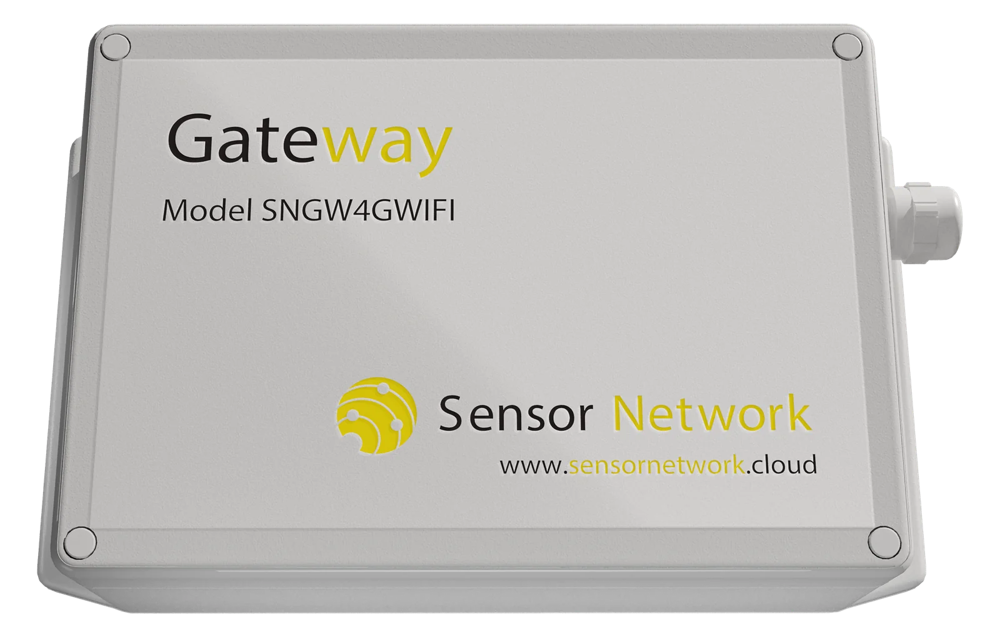

Models
Same housing, same sensor radio and the same buffer. The models differ in how the data leaves the site and how the gateway is powered.
| Model | Back-haul | Typical use | Price excl. VAT |
|---|---|---|---|
| SNGW4G | 4G LTE (nano-SIM) | Any site with mobile coverage | |
| SNGW4GWIFI | 4G LTE and Wi-Fi 2.4 GHz | Indoor sites; dual back-haul | |
| SNGW4GSOL | 4G LTE with 20 W solar panel | Fully autonomous outdoor operation |
Specifications
| Housing | 55 × 121 × 171 mm, 300 g, IP68, −20 to +60 °C; external 868 MHz and 4G antennas |
|---|---|
| Power | 6–26 V DC, 220–240 V AC, or solar with integrated charge controller; 10-day internal battery |
| Sensor radio | 868 MHz, receiver sensitivity −120 dBm; up to 300 m in open space, about 100 m indoors |
| Capacity | Up to 50 sensors per gateway |
| Local storage | 470,000 hours of records. Data is sent when the connection returns; USB-C download on site |
| Built-in sensors | Barometric pressure and ambient temperature, logged with the sensor data |
| Configuration | APN and Wi-Fi set from a PC or the Android app; gateway log visible in the platform |
| Software and maintenance | per gateway per month: cloud platform, alarms, exports, updates and support |


Planning the coverage
One gateway serves 50 sensors or about 100 m of structure. Place it central and elevated, and aim for a signal strength of 90 or better at every position. Metal or wet mass in the path costs 10 to 20 points of signal. Above 40 sensors or 100 m, or on tall and long structures, a second gateway gives redundant coverage.
From 25 sensors the coverage plan is free: send a sketch or floor plan and you get sensor positions, the gateway location and the expected signal strength per position within three working days.
When the connection drops
The gateway keeps receiving and storing. On a timber tower with 62 sensors the network kept 93 % data completeness through the first weeks, and every reading missed on the air was identified from the sequence counters. The 10-day battery keeps the alarms running through a mains failure, which is usually the moment a server-room alarm is needed.
Start with your own data in ten days.
The Demo Set (one gateway, three sensors, three months of software) is delivered within ten working days and commissioned remotely. Send a sketch or floor plan and the coverage plan comes back within three working days.
- Phone
- +359 888 920 108
- info@sitech.consulting
- Office
- 66B Manastirski Livadi Street, 1404 Sofia, Bulgaria